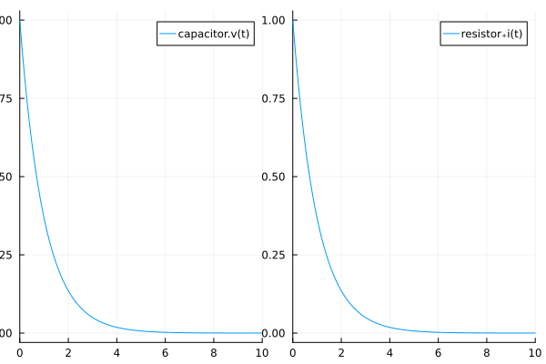
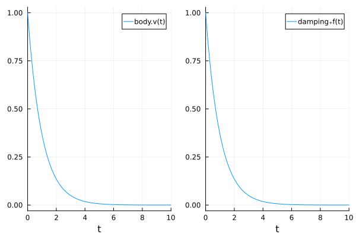
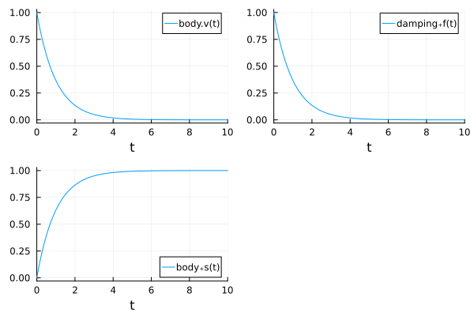
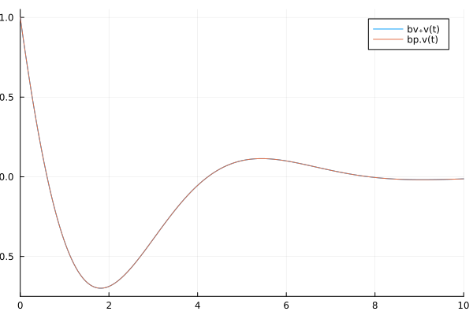
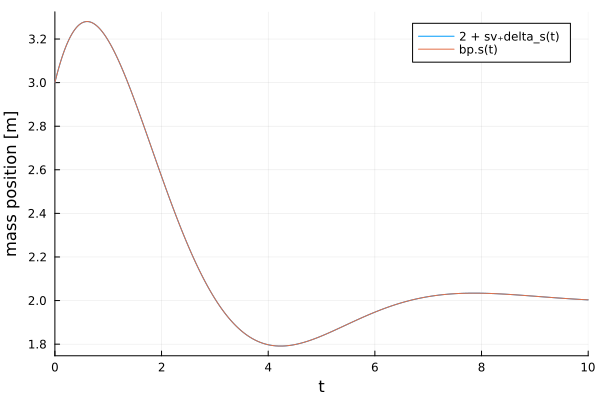
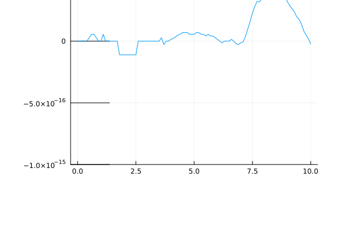

Introduction
In Physical Network Acausal modeling each physical domain must define a connector to combine model components. Each physical domain connector defines a minimum of 2 variables, one which is called a Through variable, and one which is called an Across variable. Both Modelica and SimScape define these variables in the same way:
However, the standard libraries differ on the selection of the Across variable for the Mechanical Translation and Rotation libraries, Modelica choosing position and angle and SimScape choosing velocity and angular velocity, respectively for Translation and Rotation. Modelica describes their decision here. In summary they would like to provide less integration in the model to avoid lossy numerical behavior, but this decision assumes the lowest order derivative is needed by the model. Numerically it is possible to define the connector either way, but there are some consequences to this decision, and therefore we will study them in detail here as they relate to ModelingToolkit.
Through and Across Variable Theory
General
The idea behind the selection of the through variable is that it should be a time derivative of some conserved quantity. The conserved quantity should be expressed by the across variable. In general terms the physical system is given by
- Energy Dissipation & Flow:
\[\begin{aligned} \partial {\color{blue}{across}} / \partial t \cdot c_1 = {\color{green}{through}} \\ {\color{green}{through}} \cdot c_2 = {\color{blue}{across}} \end{aligned}\]
Electrical
For the Electrical domain the across variable is voltage and the through variable current. Therefore
- Energy Dissipation:
\[\partial {\color{blue}{voltage}} / \partial t \cdot capacitance = {\color{green}{current}} \]
- Flow:
\[{\color{green}{current}} \cdot resistance = {\color{blue}{voltage}}\]
Translational
For the translation domain, choosing velocity for the across variable and force for the through gives
- Energy Dissipation:
\[\partial {\color{blue}{velocity}} / \partial t \cdot mass = {\color{green}{force}} \]
- Flow:
\[{\color{green}{force}} \cdot (1/damping) = {\color{blue}{velocity}} \]
The diagram here shows the similarity of problems in different physical domains.

Translational Connector using Position Across Variable
Now, if we choose position for the across variable, a similar relationship can be established, but the patern must be broken.
- Energy Dissipation:
\[\partial^2 {\color{blue}{position}} / \partial t^2 \cdot mass = {\color{green}{force}} \]
- Flow:
\[{\color{green}{force}} \cdot (1/damping) = \partial {\color{blue}{position}} / \partial t \]
As can be seen, we must now establish a higher order derivative to define the Energy Dissipation and Flow equations, requiring an extra equation, as will be shown in the example below.
Examples
Electrical Domain
We can generate the above relationship with ModelingToolkit and the ModelingToolkitStandardLibrary using 3 blocks:
- Capacitor: for energy storage with initial voltage = 1V
- Resistor: for energy flow
- Ground: for energy sink
As can be seen, this will give a 1 equation model matching our energy dissipation relationship
using ModelingToolkitStandardLibrary.Electrical, ModelingToolkit, DifferentialEquations
using Plots
@parameters t
@named resistor = Resistor(R = 1)
@named capacitor = Capacitor(C = 1)
@named ground = Ground()
eqs = [
connect(capacitor.p, resistor.p)
connect(resistor.n, ground.g, capacitor.n)
]
@named model = ODESystem(eqs, t; systems=[resistor, capacitor, ground])
sys = structural_simplify(model)
println.(equations(sys))Differential(t)(capacitor₊v(t)) ~ capacitor₊i(t) / capacitor₊CThe solution shows what we would expect, a non-linear disipation of voltage and releated decrease in current flow...
prob = ODEProblem(sys, [1.0], (0, 10.0), [])
sol = solve(prob)
p1=plot(sol, idxs=[capacitor.v])
p2=plot(sol, idxs=[resistor.i])
plot(p1,p2)
Mechanical Translational Domain
Across Variable = velocity
Now using the Translational library based on velocity, we can see the same relationship with a system reduced to a single equation, using the components:
- Body (i.e. moving mass): for kinetic energy storage with an initial velocity = 1m/s
- Damper: for energy flow
- Fixed: for energy sink
using ModelingToolkitStandardLibrary
const TV = ModelingToolkitStandardLibrary.Mechanical.Translational
@named damping = TV.Damper(d=1, v_a_0=1)
@named body = TV.Mass(m=1, v_0=1)
@named ground = TV.Fixed()
eqs = [
connect(damping.flange_a, body.flange)
connect(ground.flange, damping.flange_b)
]
@named model = ODESystem(eqs, t; systems=[damping, body, ground])
sys = structural_simplify(model)
println.(full_equations(sys))Differential(t)(body₊v(t)) ~ (-damping₊d*body₊v(t)) / body₊mAs expected we have a similar solution...
prob = ODEProblem(sys, [], (0, 10.0), [])
sol_v = solve(prob)
p1=plot(sol_v, idxs=[body.v])
p2=plot(sol_v, idxs=[damping.f])
plot(p1,p2)
Across Variable = position
Now, let's consider the position based approach. We can build the same model with the same components. As can be seen, we now end of up with 2 equations, because we need to relate the lower derivative (position) to force (with acceleration).
const TP = ModelingToolkitStandardLibrary.Mechanical.TranslationalPosition
@named damping = TP.Damper(d=1, v_a_0=1)
@named body = TP.Mass(m=1, v_0=1)
@named ground = TP.Fixed(s_0=0)
eqs = [
connect(damping.flange_a, body.flange)
connect(ground.flange, damping.flange_b)
]
@named model = ODESystem(eqs, t; systems=[damping, body, ground])
sys = structural_simplify(model)
println.(full_equations(sys))Differential(t)(damping₊flange_a₊s(t)) ~ body₊v(t)
Differential(t)(body₊v(t)) ~ -((damping₊d*body₊v(t)) / body₊m)As can be seen, we get exactly the same result. The only difference here is that we are solving an extra equation, which allows us to plot the body position as well.
prob = ODEProblem(sys, [], (0, 10.0), [])
sol_p = solve(prob)
p1=plot(sol_p, idxs=[body.v])
p2=plot(sol_p, idxs=[damping.f])
p3=plot(sol_p, idxs=[body.s])
plot(p1,p2,p3)
The question then arises, can the position be plotted when using the Mechanical Translational Domain based on the Velocity Across variable? Yes, we can! There are 2 solutions:
- the
Masscomponent will add the position variable when thes_0parameter is used to set an initial position. Otherwise the position is not tracked by the component.
@named body = TV.Mass(m=1, v_0=1, s_0=0)- implement a
PositionSensor
TODO: Implement Translation Sensors
Either option will produce the same result regardless of which across variable is used. If the same result is given, why are both options included in the Standard Library, what are the differences? These differences will be discussed next so that an informed decision can be made about which domain is best for your model.
Mechanical/Translational Library Differences (Velocity vs. Position Connectors)
Initialization
The main difference between ModelingToolkitStandardLibrary.Mechanical.Translational and ModelingToolkitStandardLibrary.Mechanical.TranslationalPosition is how they are initialized. In the ModelingToolkitStandardLibrary initialization parameters are defined at the component level, so we simply need to be careful to set the correct initial conditions for the domain that it used. Let's use the following example problem to explain the differences.

In this problem we have a mass, spring, and damper which are connected to a fixed point. Let's see how each component is defined.
Damper
The damper will connect the flange/flange 1 (flange_a) to the mass, and flange/flange 2 (flange_b) to the fixed point. For both position and velocity based domains, we set the damping constant d=1 and v_a_0=1 and leave the default for v_b_0 at 0. For the position domain we also need to set the initial positions for flange_a and flange_b.
@named dv = TV.Damper(d=1, v_a_0=1)
@named dp = TP.Damper(d=1, v_a_0=1, s_a_0=3, s_b_0=1)Spring
The spring will connect the flange/flange 1 (flange_a) to the mass, and flange/flange 2 (flange_b) to the fixed point. For both position and velocity based domains, we set the spring constant k=1. The velocity domain then requires the initial velocity v_a_0 and initial spring stretch delta_s_0. The position domain instead needs the initial positions for flange_a and flange_b and the natural spring length l.
@named sv = TV.Spring(k=1, v_a_0=1, delta_s_0=1)
@named sp = TP.Spring(k=1, s_a_0=3, s_b_0=1, l=1)Mass
For both position and velocity based domains, we set the mass m=1 and initial velocity v_0=1. Like the damper, the position domain requires the position initial conditions set as well.
@named bv = TV.Mass(m=1, v_0=1)
@named bp = TP.Mass(m=1, v_0=1, s_0=3)Fixed
Here the velocity domain requires no initial condition, but for our model to work as defined we must set the position domain component to the correct intital position.
@named gv = TV.Fixed()
@named gp = TP.Fixed(s_0=1)Comparison
As can be seen, the position based domain requires more initial condition information to be properly defined since the absolute position information is required. Thereore based on the model being described, it may be more natural to choose one domain over the other.
Let's define a quick function to simplify and solve the 2 different systems. Note we will solve with a fixed time step and a set tolerance to compare the numerical differences.
function simplify_and_solve(damping, spring, body, ground)
eqs = [connect(spring.flange_a, body.flange, damping.flange_a)
connect(spring.flange_b, damping.flange_b, ground.flange)
]
@named model = ODESystem(eqs, t; systems = [ground, body, spring, damping])
sys = structural_simplify(model)
println.(full_equations(sys))
prob = ODEProblem(sys, [], (0, 10.0), [])
sol = solve(prob; dt=0.1, adaptive=false, reltol=1e-9, abstol=1e-9)
return sol
endNow let's solve the velocity domain model
solv=simplify_and_solve(dv, sv, bv, gv);Differential(t)(sv₊delta_s(t)) ~ dv₊flange_a₊v(t)
Differential(t)(dv₊flange_a₊v(t)) ~ -((-(-dv₊d*dv₊flange_a₊v(t) - sv₊k*sv₊delta_s(t))) / bv₊m)And the position domain model
solp=simplify_and_solve(dp, sp, bp, gp);Differential(t)(bp₊s(t)) ~ dp₊v1(t)
Differential(t)(dp₊v1(t)) ~ -((-(-dp₊d*dp₊v1(t) - sp₊k*(bp₊s(t) - gp₊s_0 - sp₊l))) / bp₊m)Now we can plot the comparison of the 2 models and see they give the same result.
plot(ylabel="mass velocity [m/s]")
plot!(solv, idxs=[bv.v])
plot!(solp, idxs=[bp.v])
But, what if we wanted to plot the mass position? This is easy for the position based domain, we have the state bp₊s(t), but for the velocity based domain we have sv₊delta_s(t) which is the spring stretch. To get the absolute position we add the spring natrual length (1m) and the fixed position (1m). As can be seen, we then get the same result.
plot(ylabel="mass position [m]")
plot!(solv, idxs=[sv.delta_s + 1 + 1])
plot!(solp, idxs=[bp.s])
So in conclusion, the position based domain gives easier access to absolute position information, but requires more initial condition information.
Acuracy
One may ask then what is the trade off in terms of numerical acuracy? When we look at the simplified equations, we can see that actually both systems solve the same equations. The differential equations of the velocity domain are
\[\begin{aligned} m \cdot \dot{v} + d \cdot v + k \cdot \Delta s = 0 \\ \dot{\Delta s} = v \end{aligned}\]
And for the position domain are
\[\begin{aligned} m \cdot \dot{v} + d \cdot v + k \cdot (s - s_{b_0} - l) = 0 \\ \dot{s} = v \end{aligned}\]
By definition the spring stretch is
\[\Delta s = s - s_{b_0} - l\]
Which means both systems are actually solving the same exact system. We can plot the numerical difference between the 2 systems and see the result is negligible.
plot(title="numerical difference: vel. vs. pos. domain", xlabel="time [s]", ylabel="solv[bv.v] .- solp[bp.v]")
time = 0:0.1:10
plot!(time, (solv(time)[bv.v] .- solp(time)[bp.v]), label="")
Plots.ylims!(-1e-15, 1e-15)